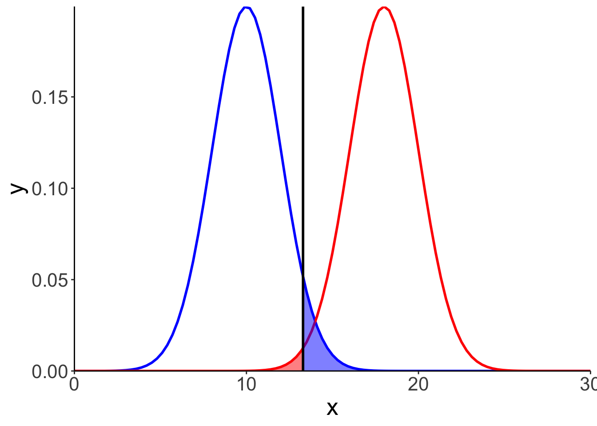
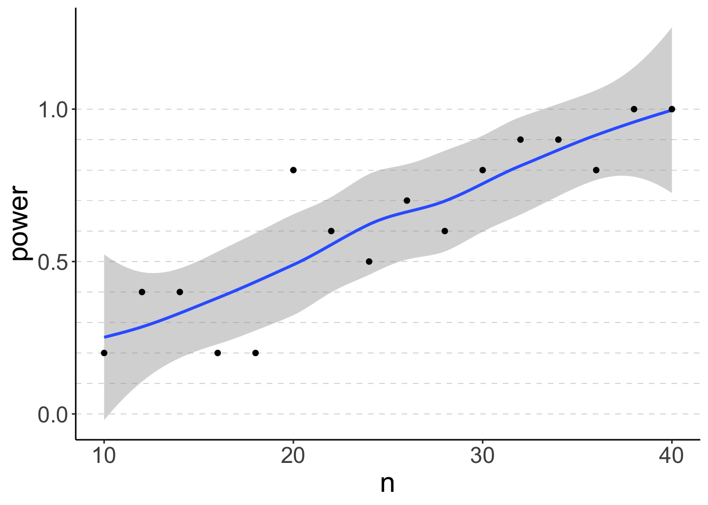
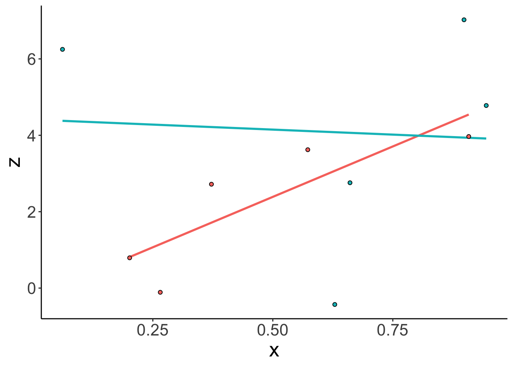

Chapter 15 Power analysis
15.1 Learning goals
- Making decisions based on statistical inference.
- The concept of statistical power.
- Calculating power.
- Common effect size measures.
- Determining sample size via simulation.
- Understanding
map()and its children. - Understanding
nest()andunnest().
- Understanding
15.2 Load packages and set plotting theme
library("knitr") # for knitting RMarkdown
library("kableExtra") # for making nice tables
library("broom") # for tidying up model fits
library("magrittr") # for going all in with the pipe
library("lsr") # for computing effect size measures
library("effectsize") # for computing effect size measures
library("pwr") # for power calculations
library("tidyverse") # for wrangling, plotting, etc. 15.3 Load data sets
15.4 Decision-making
Figures to illustrate power:
mu0 = 10
mu1 = 18
# mu0 = 8
# mu1 = 20
# sd0 = 3
# sd1 = 3
sd0 = 2
sd1 = 2
alpha = 0.05
# alpha = 0.01
ggplot(data = tibble(x = c(0, 30)),
mapping = aes(x = x)) +
stat_function(fun = "dnorm",
size = 1,
color = "blue",
args = list(mean = mu0,
sd = sd0)) +
stat_function(fun = "dnorm",
size = 1,
color = "red",
args = list(mean = mu1,
sd = sd1)) +
stat_function(fun = "dnorm",
geom = "area",
size = 1,
fill = "blue",
alpha = 0.5,
args = list(mean = mu0,
sd = sd0),
xlim = c(qnorm(1-alpha, mean = mu0, sd = sd0), 20)
) +
stat_function(fun = "dnorm",
geom = "area",
size = 1,
fill = "red",
alpha = 0.5,
args = list(mean = mu1,
sd = sd1),
xlim = c(0, c(qnorm(1-alpha, mean = mu0, sd = sd0)))
) +
geom_vline(xintercept = qnorm(1-alpha, mean = mu0, sd = sd0),
size = 1) +
coord_cartesian(expand = F)
15.5 Effect sizes
15.5.1 eta-squared and partial eta-squared
One-way ANOVA:
## eta.sq eta.sq.part
## hand 0.3311076 0.3311076# compute by hand
fit %>%
anova %>%
tidy() %>%
pull(sumsq) %>%
divide_by(sum(.)) %>%
magrittr::extract(1)## [1] 0.3311076Two-way ANOVA:
## eta.sq eta.sq.part
## hand 0.331107585 0.343119717
## skill 0.005191225 0.008123029
## hand:skill 0.029817351 0.044925866# compute by hand
eta_squared = fit %>%
anova %>%
tidy() %>%
pull(sumsq) %>%
divide_by(sum(.)) %>%
magrittr::extract(1)
# compute partial eta squared by hand
eta_partial_squared = fit %>%
anova %>%
tidy() %>%
filter(term %in% c("hand","Residuals")) %>%
select(term, sumsq) %>%
spread(term, sumsq) %>%
summarize(eta_partial_squared = hand / (hand + Residuals)) %>%
pull(eta_partial_squared)15.5.2 Cohen’s d
Cohen’s \(d\) is defined as:
\[ d = \frac{\overline y_1 - \overline y_2}{s_p} \]
where
\[ s_p = \sqrt\frac{(n_1-1)s_1^2 + (n_2-1)s_2^2}{n_1 + n_2 - 2} \]
## [1] 0.1439934# compute by hand
df.cohen = df.poker %>%
group_by(skill) %>%
summarize(mean = mean(balance),
var = var(balance),
n = n()) %>%
ungroup()
n1 = df.cohen$n[1]
n2 = df.cohen$n[2]
var1 = df.cohen$var[1]
var2 = df.cohen$var[2]
mean1 = df.cohen$mean[1]
mean2 = df.cohen$mean[2]
sp = sqrt(((n1 - 1) * var1 + (n2 - 1) * var2) / (n1 + n2 - 2))
d = abs(mean1 - mean2) / sp
print(d)## [1] 0.143993415.6 Determining sample size
One way to deterime sample size is by using the pwr package. While this packages is very convenient, we cannot compute power for all the hypotheses that we might be interested in testing.
15.6.1 pwr package
The pwr package has a number of functions that we can use do determine the desired sample size for different experimental designs. Check out this vignette here for more information.
15.6.1.1 Binomial test
We can determine what sample size we need for a Binomal test that compares two different proportions like so:
##
## proportion power calculation for binomial distribution (arcsine transformation)
##
## h = 0.5235988
## n = 22.55126
## sig.level = 0.05
## power = 0.8
## alternative = greaterThe pwr.p.test() function wants the effect size h as an argument which we can compute via the ES.h() function that takes two proportions as arguments. I then further defined the desired significance level, power, and whether the test is one-sided or two-sided.
To have an 80% chance of detecting a difference between a proportion of p1 = 0.75 and p2 = 0.50, we would need to run a study with 23 participants.
We can use the plot() function to illustrate what power we would get for different sample sizes.
pwr.p.test(h = ES.h(p1 = 0.75, p2 = 0.50),
sig.level = 0.05,
power = 0.80,
alternative = "greater") %>%
plot()
Notice that this is a ggplot object, so we could tweak it further if we’d like to, like so:
pwr.p.test(h = ES.h(p1 = 0.75, p2 = 0.50),
sig.level = 0.05,
power = 0.80,
alternative = "greater") %>%
plot() +
geom_hline(yintercept = 0.5,
linetype = 2,
color = "blue") +
theme(plot.title = element_text(size = 20))
15.6.1.2 t-test (two independent samples)
Here is how we could calculate the desired sample size for a t-test with two independent samples.
##
## Two-sample t test power calculation
##
## n = 175.3847
## d = 0.3
## sig.level = 0.05
## power = 0.8
## alternative = two.sided
##
## NOTE: n is number in *each* groupSo, to achieve a power of 0.8 for an effect size of d = 0.3, we would need to have 176 participants in each condition!
15.6.2 Power analysis via simulation
While the pwr package works great for relatively simple designs, it quickly reaches its limits. For example, you may be interested in the sample size required to achieve adequate power for detecting an interaction, or for a specific linear contrast.
Luckily, there is a very flexible approach to determining sample size: via simulation!
15.6.2.1 The general recipe
- assume: significance level, n, effect size
- simulate a large number of data sets of size n with the specified effect size
- for each data set, run a statistical test to calculate the p-value
- determine the probability of rejecting the H0 (given that H1 is true)
15.6.2.2 Understanding map()
map() is a powerful family of functions that’s part of the purrr package (which is included in the tidyverse, so we don’t have to load it separately). Using map() allows us to avoid nasty for-loops!
Let’s take a look at the help function.
As the help function says, map() allows us to apply a function to each element of a vector. Here is a simple example:
## [[1]]
## [1] 1
##
## [[2]]
## [1] 4
##
## [[3]]
## [1] 9I’ve passed the vector of numbers .x = 1:3 to map(), and then applied the anonymous function .f = ~ .x^2 to each of the elements in that vector.
Always make sure to use the
~for defining anonymous functions!
As with many R functions, you can achieve the same outcome in many different ways. Here are a number of ways to do the same thing:
## [1] "Is tmp1 identical to tmp2? TRUE"## [1] "Is tmp2 identical to tmp3? TRUE"15.6.2.2.1 Understanding map()’s children
Notice that the output of map() is a list.
## List of 3
## $ : num 1
## $ : num 4
## $ : num 9The map() function has many children that differ in what they output. For example, map_dbl() outputs a numeric vector instead of a list.
## [1] 1 4 9And map_lgl() returns logical values.
## [1] TRUE FALSE FALSEWe can also return data frames by using either map_dfr() which binds data frames by row, or map_dfc() which binds data frames by column. Here is an example:
set.seed(1)
# function to create a data frame
fun_make_df = function(x){
tibble(number = x,
group = sample(c("A", "B"),
size = 3,
replace = T),
value = rnorm(n = 3))
}
# bind data frames by row
map_dfr(1:3, ~ fun_make_df(.))## # A tibble: 9 x 3
## number group value
## <int> <chr> <dbl>
## 1 1 A 1.33
## 2 1 B 1.27
## 3 1 A 0.415
## 4 2 B 0.487
## 5 2 A 0.738
## 6 2 A 0.576
## 7 3 B -0.799
## 8 3 A -1.15
## 9 3 A -0.289A nice use-case of the map_dfr() function can be to read in a number of csv files from individual participants into one larger data frame. Let’s simulate some data first, and save the data of each participant as a separate csv file (using map() of course).
set.seed(1)
fun_simulate_csv = function(x){
n_observations = sample(3:6, size = 1)
df = tibble(age = sample(18:99, size = n_observations),
responses = rnorm(n = n_observations, mean = 100, sd = 10))
write_csv(df, path = str_c("data/participant", x, ".csv"))
}
map(1:3, fun_simulate_csv)## [[1]]
## # A tibble: 3 x 2
## age responses
## <int> <dbl>
## 1 85 91.6
## 2 56 116.
## 3 18 103.
##
## [[2]]
## # A tibble: 5 x 2
## age responses
## <int> <dbl>
## 1 68 115.
## 2 38 104.
## 3 71 93.8
## 4 91 77.9
## 5 24 111.
##
## [[3]]
## # A tibble: 4 x 2
## age responses
## <int> <dbl>
## 1 61 106.
## 2 96 109.
## 3 50 108.
## 4 52 101.Now, let’s read in the data from the three participants and combine it into a single data frame.
## # A tibble: 12 x 2
## age responses
## <dbl> <dbl>
## 1 85 91.6
## 2 56 116.
## 3 18 103.
## 4 68 115.
## 5 38 104.
## 6 71 93.8
## 7 91 77.9
## 8 24 111.
## 9 61 106.
## 10 96 109.
## 11 50 108.
## 12 52 101.One problem is that I now don’t know which data is coming from which participant. mutate() comes to our rescue here:
map_dfr(.x = 1:3,
.f = ~ read_csv(str_c("data/participant", .x, ".csv")) %>%
mutate(participant = .x)) %>%
select(participant, age, responses)## # A tibble: 12 x 3
## participant age responses
## <int> <dbl> <dbl>
## 1 1 85 91.6
## 2 1 56 116.
## 3 1 18 103.
## 4 2 68 115.
## 5 2 38 104.
## 6 2 71 93.8
## 7 2 91 77.9
## 8 2 24 111.
## 9 3 61 106.
## 10 3 96 109.
## 11 3 50 108.
## 12 3 52 101.Another neat way to achieve the same thing (same same but different) is to use the .id argument of the map_dfr() function.
map_dfr(.x = 1:3,
.f = ~ read_csv(str_c("data/participant", .x, ".csv")),
.id = "participant") %>%
select(participant, age, responses)## # A tibble: 12 x 3
## participant age responses
## <chr> <dbl> <dbl>
## 1 1 85 91.6
## 2 1 56 116.
## 3 1 18 103.
## 4 2 68 115.
## 5 2 38 104.
## 6 2 71 93.8
## 7 2 91 77.9
## 8 2 24 111.
## 9 3 61 106.
## 10 3 96 109.
## 11 3 50 108.
## 12 3 52 101.15.6.2.2.2 Use map2() for functions with more than one input
If you have a function with more than one input, map2() is your friend. Here is a silly example:
## [1] 1.00 2.10 5.32Here, I took the vector of numbers .x and rounded it to a different number of digits according to what I’ve specified it .y.
The same works with data frames, too, like so:
tibble(x = c(1.23, 2.13, 5.32),
n = c(0, 1, 2)) %>%
mutate(rounded = map2_dbl(.x = x,
.y = n,
.f = ~ round(.x, digits = .y)))## # A tibble: 3 x 3
## x n rounded
## <dbl> <dbl> <dbl>
## 1 1.23 0 1
## 2 2.13 1 2.1
## 3 5.32 2 5.3215.6.2.2.3 Use pmap() to go all out (i.e. for functions with more than two arguments)
pmap() is your friend for functions that have more than two arguments. Here is an example:
tibble(x = c(1, 2, 3),
y = c(23, 12, 1),
z = c(4, 5, 4)) %>%
mutate(result = pmap_dbl(.l = ., ~ ..1 * ..2 + ..3))## # A tibble: 3 x 4
## x y z result
## <dbl> <dbl> <dbl> <dbl>
## 1 1 23 4 27
## 2 2 12 5 29
## 3 3 1 4 7Notice than when using more than two arguments, we refer to each function argument with ..1, ..2, ..3, etc.
15.6.2.2.4 Practice 1 – Having fun with map()
Use the map2_dbl() function to create a new variable in this data frame that’s the maximum of each row across columns a and b.
For the fast ones: For each row in the data frame, write a function that calculates the mean of columns a and b, and the rounds to the number of digits specified in column d.
15.6.2.3 List columns
map() becomes particularly powerful when combined with list columns. List columns allow you to put data frames into a column of your data frame. For example, you can do something like this:
df = tibble(participant = 1,
age = 23,
data = list(tibble(trial = c(1, 2, 3),
response = c(23, 95, 37))))
print(df)## # A tibble: 1 x 3
## participant age data
## <dbl> <dbl> <list>
## 1 1 23 <tibble [3 × 2]>We could access what’s in this data column like so
## # A tibble: 3 x 2
## trial response
## <dbl> <dbl>
## 1 1 23
## 2 2 95
## 3 3 3715.6.2.3.1 unnest()
For getting data frames out of list columns, we can use the unnest() function.
## # A tibble: 3 x 4
## participant age trial response
## <dbl> <dbl> <dbl> <dbl>
## 1 1 23 1 23
## 2 1 23 2 95
## 3 1 23 3 37Notice how the data frame from the list column
15.6.2.3.2 nest()
We can use the nest() function to create list columns. nest() works particularly well in combination with group_by(). For example, here I’m created three separate data sets where the size of each data set is determined by the x column.
## # A tibble: 6 x 3
## x y z
## <dbl> <int> <int>
## 1 1 1 6
## 2 1 2 5
## 3 1 3 4
## 4 2 4 3
## 5 2 5 2
## 6 3 6 1## # A tibble: 3 x 2
## # Groups: x [3]
## x data
## <dbl> <list>
## 1 1 <tibble [3 × 2]>
## 2 2 <tibble [2 × 2]>
## 3 3 <tibble [1 × 2]>## # A tibble: 6 x 3
## # Groups: x [3]
## x y z
## <dbl> <int> <int>
## 1 1 1 6
## 2 1 2 5
## 3 1 3 4
## 4 2 4 3
## 5 2 5 2
## 6 3 6 1And, of course, I can use unnest() to get back to my original data frame.
15.6.2.4 Combining nest() and map()
nest() and map() unfold their power together when it comes to fitting models. For example, consider that you want to fit a separate linear to subests of your data. Here is how you can do that using nest() and map().
I’ll demonstrate via the infamous mtcars data set that comes with R.
## mpg cyl disp hp drat wt qsec vs am gear carb
## Mazda RX4 21.0 6 160.0 110 3.90 2.620 16.46 0 1 4 4
## Mazda RX4 Wag 21.0 6 160.0 110 3.90 2.875 17.02 0 1 4 4
## Datsun 710 22.8 4 108.0 93 3.85 2.320 18.61 1 1 4 1
## Hornet 4 Drive 21.4 6 258.0 110 3.08 3.215 19.44 1 0 3 1
## Hornet Sportabout 18.7 8 360.0 175 3.15 3.440 17.02 0 0 3 2
## Valiant 18.1 6 225.0 105 2.76 3.460 20.22 1 0 3 1
## Duster 360 14.3 8 360.0 245 3.21 3.570 15.84 0 0 3 4
## Merc 240D 24.4 4 146.7 62 3.69 3.190 20.00 1 0 4 2
## Merc 230 22.8 4 140.8 95 3.92 3.150 22.90 1 0 4 2
## Merc 280 19.2 6 167.6 123 3.92 3.440 18.30 1 0 4 4What I want to do is to fit separate regression models predicting mpg (miles per gallon) as a function of wt (the car’s weight) for cars with different numbers of cylinders. Here is how that works.
## # A tibble: 3 x 3
## # Groups: cyl [3]
## cyl data fit
## <dbl> <list> <list>
## 1 6 <tibble [7 × 10]> <lm>
## 2 4 <tibble [11 × 10]> <lm>
## 3 8 <tibble [14 × 10]> <lm>I first grouped by the cyl (the number of cylinders), used nest() to put the rest of the data into a list column, and then used mutate() to run a separate linear model on each data set and saved the modle result into the fit column.
With some more wrangling, I could, for example, extract the coefficients of each model like so:
mtcars %>%
group_by(cyl) %>%
nest() %>%
mutate(fit = map(data, ~ lm(mpg ~ 1 + wt, data = .x)),
coef = map(fit, tidy)) %>%
unnest(cols = coef) %>%
select(-c(data, fit))## # A tibble: 6 x 6
## # Groups: cyl [3]
## cyl term estimate std.error statistic p.value
## <dbl> <chr> <dbl> <dbl> <dbl> <dbl>
## 1 6 (Intercept) 28.4 4.18 6.79 0.00105
## 2 6 wt -2.78 1.33 -2.08 0.0918
## 3 4 (Intercept) 39.6 4.35 9.10 0.00000777
## 4 4 wt -5.65 1.85 -3.05 0.0137
## 5 8 (Intercept) 23.9 3.01 7.94 0.00000405
## 6 8 wt -2.19 0.739 -2.97 0.0118Voila! A data frame that contains the coefficients for each of the three models.
Base R has a number of functions like apply(), sapply(), lapply(), etc. that do similar things to map(). However, the map() family of functions works very well with the rest of the tidyverse, that’s why we’ll use it.
15.6.2.4.1 Practice 2 – map()ping out the nest()
In the mtcars data set, run separate linear models with cyl (number of cylinders) and am (whether the car has automatic or manual transmission) as predictors (including their interaction), and mpg (miles per galon), and hp (horse power) as dependent variables. Create a data frame that contains one column with the names of the dependent variables, one column with the names of the predictors, and one column with the p-value for each predictor.
Here is the general strategy for how to go about this:
- Make a data frame that only contains the dependent variables.
- Pass that data frame as a first argument to the
map()function. - The second argument in the
map()function (the formulaf. =) should be a linear model (lm()) for which you should use.xas the dependent variable (this will )
15.6.2.5 Power analysis via simulation
So, after this long detour via map(), list columns, nest(), and unnest(), we can finally start doing some power analysis via simulation, yay!
15.6.2.5.1 Simulating the Binomial test
Let’s start with the Binomial test that we played around with above. We want to use simulation to determine the sample size we need to have an 80% of detecting a difference between two proportions p = 0.75 and p = 0.5.
Here is how we would go about this. First, I’ll set up a simulation grid.
# make reproducible
set.seed(1)
# number of simulations
n_simulations = 10
# set up simulation grid
df.power = crossing(n = seq(10, 40, 2),
simulation = 1:n_simulations,
p = 0.75) %>%
mutate(index = 1:n()) # add an index column
df.power## # A tibble: 160 x 4
## n simulation p index
## <dbl> <int> <dbl> <int>
## 1 10 1 0.75 1
## 2 10 2 0.75 2
## 3 10 3 0.75 3
## 4 10 4 0.75 4
## 5 10 5 0.75 5
## 6 10 6 0.75 6
## 7 10 7 0.75 7
## 8 10 8 0.75 8
## 9 10 9 0.75 9
## 10 10 10 0.75 10
## # … with 150 more rowsThe crossing() function creates a data frame that contains all the combinations of the variables.
Now, let’s generate data according to our hypothesis.
df.power = df.power %>%
group_by(index, n, simulation) %>%
mutate(response = rbinom(n = n(), size = n, prob = p))
df.power## # A tibble: 160 x 5
## # Groups: index, n, simulation [160]
## n simulation p index response
## <dbl> <int> <dbl> <int> <int>
## 1 10 1 0.75 1 8
## 2 10 2 0.75 2 8
## 3 10 3 0.75 3 7
## 4 10 4 0.75 4 6
## 5 10 5 0.75 5 9
## 6 10 6 0.75 6 6
## 7 10 7 0.75 7 5
## 8 10 8 0.75 8 7
## 9 10 9 0.75 9 7
## 10 10 10 0.75 10 9
## # … with 150 more rowsThe response variable now contains samples from the sample size n according to the probability specified in p. Now it’s time for group_by() and nest() because we want to calculate the p-value for observing this reponse if in fact the null hypothesis was true (i.e. p = 0.5).
df.power = df.power %>% # generate random data
group_by(index, simulation, p) %>%
nest() %>% # put data in list column
mutate(fit = map(data,
~ binom.test(x = .$response, # define formula
n = .$n,
p = 0.5,
alternative = "two.sided")))
df.power## # A tibble: 160 x 5
## # Groups: simulation, p, index [160]
## simulation p index data fit
## <int> <dbl> <int> <list> <list>
## 1 1 0.75 1 <tibble [1 × 2]> <htest>
## 2 2 0.75 2 <tibble [1 × 2]> <htest>
## 3 3 0.75 3 <tibble [1 × 2]> <htest>
## 4 4 0.75 4 <tibble [1 × 2]> <htest>
## 5 5 0.75 5 <tibble [1 × 2]> <htest>
## 6 6 0.75 6 <tibble [1 × 2]> <htest>
## 7 7 0.75 7 <tibble [1 × 2]> <htest>
## 8 8 0.75 8 <tibble [1 × 2]> <htest>
## 9 9 0.75 9 <tibble [1 × 2]> <htest>
## 10 10 0.75 10 <tibble [1 × 2]> <htest>
## # … with 150 more rowsNow that we’ve fitted a bunch of binomial models, we only need to get at the p-values. Again, we can use the tidy() function from the broom package for help, like so:
df.power = df.power %>%
mutate(coef = map(fit, tidy)) %>%
select(simulation, p, index, coef) %>%
unnest(cols = coef) %>%
rename(n = parameter)
df.power## # A tibble: 160 x 11
## # Groups: simulation, p, index [160]
## simulation p index estimate statistic p.value n conf.low conf.high
## <int> <dbl> <int> <dbl> <dbl> <dbl> <dbl> <dbl> <dbl>
## 1 1 0.75 1 0.8 8 0.109 10 0.444 0.975
## 2 2 0.75 2 0.8 8 0.109 10 0.444 0.975
## 3 3 0.75 3 0.7 7 0.344 10 0.348 0.933
## 4 4 0.75 4 0.6 6 0.754 10 0.262 0.878
## 5 5 0.75 5 0.9 9 0.0215 10 0.555 0.997
## 6 6 0.75 6 0.6 6 0.754 10 0.262 0.878
## 7 7 0.75 7 0.5 5 1 10 0.187 0.813
## 8 8 0.75 8 0.7 7 0.344 10 0.348 0.933
## 9 9 0.75 9 0.7 7 0.344 10 0.348 0.933
## 10 10 0.75 10 0.9 9 0.0215 10 0.555 0.997
## # … with 150 more rows, and 2 more variables: method <chr>, alternative <chr>Finally, all that’s left is to calculate power by looking at the proportion of times in which we rejected the null hypothesis.
## # A tibble: 16 x 2
## n power
## <dbl> <dbl>
## 1 10 0.2
## 2 12 0.4
## 3 14 0.4
## 4 16 0.2
## 5 18 0.2
## 6 20 0.8
## 7 22 0.6
## 8 24 0.5
## 9 26 0.7
## 10 28 0.6
## 11 30 0.8
## 12 32 0.9
## 13 34 0.9
## 14 36 0.8
## 15 38 1
## 16 40 1Notice here that the power values fluctuate quite a bit. This is because we only ran 10 simulations for each sample size. To have more robust results, we need to increase the number of simulations.
But first, let’s make a plot that visualizes what we found:
df.plot = df.power %>%
group_by(n) %>%
summarize(power = sum(p.value < 0.05) / n())
ggplot(data = df.plot,
mapping = aes(x = n, y = power)) +
geom_hline(yintercept = seq(0, 1, 0.1),
linetype = 2,
color = "gray50",
size = 0.1) +
geom_smooth(method = "loess") +
geom_point()## `geom_smooth()` using formula 'y ~ x'
As expected, the power increases with the sample size n.
Now let’s run the same simulation again, with a larger sample size, and also for two different alternative hypotheses: p1 = 0.75, and p2 = 0.9.
# make reproducible
set.seed(1)
# number of simulations
n_simulations = 100
# run simulation
df.power = crossing(n = seq(10, 40, 2),
simulation = 1:n_simulations,
p = c(0.75, 0.9)) %>% # added another hypothesis here
mutate(index = 1:n()) %>%
group_by(index, n, simulation) %>%
mutate(response = rbinom(n = n(), size = n, prob = p)) %>%
group_by(index, simulation, p) %>%
nest() %>%
mutate(fit = map(data,
~ binom.test(x = .$response,
n = .$n,
p = 0.5,
alternative = "two.sided"))) %>%
mutate(coef = map(fit, tidy)) %>%
select(simulation, p, index, coef) %>%
unnest(cols = coef) %>%
rename(n = parameter) %>%
group_by(n, p) %>%
summarize(power = sum(p.value < 0.05) / n())
# visualize results
ggplot(data = df.power,
mapping = aes(x = n,
y = power,
fill = as.factor(p),
group = p)) +
geom_hline(yintercept = seq(0, 1, 0.1),
linetype = 2,
color = "gray50",
size = 0.1) +
geom_smooth(method = "loess",
color = "black") +
geom_point(shape = 21) +
labs(fill = "alternative") +
guides(fill = guide_legend(reverse = T))## `geom_smooth()` using formula 'y ~ x'
15.6.2.5.2 Simulating an independent samples t-test
Let’s simulate data for an independent samples t-test. To do so, we need to make some assumptions about what we expect the distribution of the data to look like. Here, I assume that we get normally distributed data with some mean and standard deviation.
The procedure will be very similar to the Binomial test above. The only thing that changes really is how we generate the data (and then some small wrangling differences).
Let’s say that we collected the following pilotdata set:
set.seed(1)
# parameters
n = 10
mean1 = 10
sd1 = 2
mean2 = 11
sd2 = 3
df.ttest = tibble(group1 = rnorm(n = n,
mean = mean1,
sd = sd1),
group2 = rnorm(n = n,
mean = mean2,
sd = sd2)) %>%
pivot_longer(cols = everything())The two groups in our sample don’t differ significantly from each other.
ggplot(data = df.ttest,
mapping = aes(x = name,
y = value)) +
stat_summary(fun.data = "mean_cl_boot")
##
## Welch Two Sample t-test
##
## data: value by name
## t = -1.3135, df = 13.035, p-value = 0.2117
## alternative hypothesis: true difference in means is not equal to 0
## 95 percent confidence interval:
## -3.9191375 0.9548788
## sample estimates:
## mean in group group1 mean in group group2
## 10.26441 11.74653Let’s calculate what the effect size was in our sample. Remember that Cohen’s d is defined as
\[d = \frac{\lvert\overline y_1 - \overline y_2\rvert}{s_p}\]
where
\[s_p = \sqrt\frac{(n_1-1)s_1^2 + (n_2-1)s_2^2}{n_1 + n_2 - 2}\]
In our sample, the effect size Cohen’s d was:
df = df.ttest %>%
group_by(name) %>%
summarize(mean = mean(value),
sd = sd(value),
n = n()) %>%
ungroup()
sp = sqrt(((df$n[1] - 1) * df$sd[1]^2 + (df$n[2] - 1) * df$sd[2]^2) / (df$n[1] + df$n[2] - 2))
d = abs(df$mean[1] - df$mean[2]) / sp
d## [1] 0.5874251Let’s double check that we got it right:
## [1] -0.5874251We did!
So let’s now calculate the means and standard deviations based on our pilot data and run a power analysis to determine how many participants we would need, to have an 80% chance of rejecting the null hypothesis for the estimated effect size.
# make reproducible
set.seed(1)
# parameters
mean1 = df$mean[1]
mean2 = df$mean[2]
sd1 = df$sd[1]
sd2 = df$sd[2]
# number of simulations
n_simulations = 10
# n_simulations = 50
# run simulation
df.power2 = crossing(n = seq(from = 10, to = 60, by = 2),
simulation = 1:n_simulations) %>%
mutate(index = 1:n()) %>%
group_by(index, n, simulation) %>%
mutate(data = list(tibble(group1 = rnorm(n = n,
mean = mean1,
sd = sd1),
group2 = rnorm(n = n,
mean = mean2,
sd = sd2)) %>%
pivot_longer(cols = everything()))) %>%
group_by(index, n, simulation) %>%
mutate(p.value = map(data,
~ t.test(formula = value ~ name,
data = .x)$p.value)) %>%
# mutate(coef = map(fit, tidy)) %>%
# select(simulation, n, index, coef) %>%
# unnest(cols = coef) %>%
group_by(n) %>%
summarize(power = sum(p.value < 0.05) / n())
# visualize results
ggplot(data = df.power2,
mapping = aes(x = n,
y = power)) +
geom_hline(yintercept = seq(0, 1, 0.1),
linetype = 2,
color = "gray50",
size = 0.1) +
geom_smooth(method = "loess",
color = "black") +
geom_point(shape = 21) +
scale_x_discrete()## `geom_smooth()` using formula 'y ~ x'
Let’s compare to what we’d get from the pwr package.
##
## Two-sample t test power calculation
##
## n = 46.4718
## d = 0.5874251
## sig.level = 0.05
## power = 0.8
## alternative = two.sided
##
## NOTE: n is number in *each* groupLooks pretty similar!
15.6.2.5.3 Practice 3 – Simulation of an interaction effect
Try to run a simulation to determine how many participants you would need to have an 80% chance of rejecting the null hypothesis that there is no interaction based on the following pilot data set:
set.seed(1)
# population parameters
b0 = 1
b1 = 2
b2 = 3
b1_2 = -2
sd = 2
n = 10
df.linear = tibble(x = runif(n = n),
y = rep(c(0, 1), each = n/2),
z = b0 + b1 * x + b2 * y + b1_2 * x * y + rnorm(n = n, sd = sd))Let’s visualize the pilot data first:
ggplot(data = df.linear,
mapping = aes(x = x,
y = z,
group = y,
fill = as.factor(y),
color = as.factor(y))) +
geom_smooth(method = "lm",
se = F,
show.legend = F) +
geom_point(shape = 21,
color = "black",
show.legend = F)## `geom_smooth()` using formula 'y ~ x'
Let’s estimate the parameters based on our sample:
# parameter estimates for the coefficients based on the sample
b = lm(formula = z ~ x * y,
data = df.linear) %>%
tidy() %>%
select(term, estimate, p.value)
# parameter estimate of the residual standard deviation
sigma = lm(formula = z ~ x * y,
data = df.linear) %>%
glance() %>%
pull(sigma)Run a power analysis to see how many participants you would need to have an 80% of rejecting the null hypothesis that there is no interaction. Use the parameter estimates (the beta coefficients and the standard deviation of the residuals sigma) based on your pilot data to simulate new data.
Here is the strategy:
- Try to closely emulate what we’ve been doing for the independent samples t-test above.
- However, this time, we have a different way of generating the data (namely by using the regression equation: \(z \sim b_0 + b_1 \cdot x + b_2 \cdot y + b_{1\_2} \cdot x \cdot y + e)\), where \(e \sim N(0, \sigma)\).
- Fit the model first to extract the estimates for the beta coefficients, and the standard deviation of the residuals
sigma. - Then use these parameters to generate new data assuming that
xis a continuous predictor between 0 and 1 (x = runif(n = n)) andyis a binary, dummy-coded variable (y = rep(c(0, 1), each = n/2)). - Extract the coefficients of each model fit, and check whether the interaction is significant.
- Make a plot that shows how power changes with the sample size n.
Run the same power analysis this time assuming the ground truth parameters from the population (rather than the parameters that we’ve estimated from the sample).
15.7 Additional resources
15.7.1 Datacamp
15.7.2 Cheatsheets
15.7.3 Misc
- Getting started with
pwr - Visualize power
- Calculating and reporting effect sizes to facilitate cumulative science: a practical primer for t-tests and ANOVAs
- purrr tutorial
- simr: R Package for running power analysis for generalized linear mixed effects models.
- simglm: Alternative R package for running power analysis via simulation.
- cautionary tale about using pilot studies for power calculations
15.8 Session info
Information about this R session including which version of R was used, and what packages were loaded.
## R version 3.6.2 (2019-12-12)
## Platform: x86_64-apple-darwin15.6.0 (64-bit)
## Running under: macOS Mojave 10.14.6
##
## Matrix products: default
## BLAS: /Library/Frameworks/R.framework/Versions/3.6/Resources/lib/libRblas.0.dylib
## LAPACK: /Library/Frameworks/R.framework/Versions/3.6/Resources/lib/libRlapack.dylib
##
## locale:
## [1] en_US.UTF-8/en_US.UTF-8/en_US.UTF-8/C/en_US.UTF-8/en_US.UTF-8
##
## attached base packages:
## [1] stats graphics grDevices utils datasets methods base
##
## other attached packages:
## [1] forcats_0.5.0 stringr_1.4.0 dplyr_0.8.4 purrr_0.3.3
## [5] readr_1.3.1 tidyr_1.0.2 tibble_2.1.3 ggplot2_3.3.0
## [9] tidyverse_1.3.0 pwr_1.2-2 effectsize_0.2.0 lsr_0.5
## [13] magrittr_1.5 broom_0.5.5 kableExtra_1.1.0 knitr_1.28
##
## loaded via a namespace (and not attached):
## [1] nlme_3.1-145 fs_1.3.2 lubridate_1.7.4
## [4] insight_0.8.1 webshot_0.5.2 RColorBrewer_1.1-2
## [7] httr_1.4.1 tools_3.6.2 backports_1.1.5
## [10] utf8_1.1.4 R6_2.4.1 rpart_4.1-15
## [13] Hmisc_4.3-1 DBI_1.1.0 mgcv_1.8-31
## [16] colorspace_1.4-1 nnet_7.3-13 withr_2.1.2
## [19] tidyselect_1.0.0 gridExtra_2.3 compiler_3.6.2
## [22] cli_2.0.2 rvest_0.3.5 htmlTable_1.13.3
## [25] xml2_1.2.2 labeling_0.3 bookdown_0.18
## [28] bayestestR_0.5.2 scales_1.1.0 checkmate_2.0.0
## [31] digest_0.6.25 foreign_0.8-76 rmarkdown_2.1
## [34] base64enc_0.1-3 jpeg_0.1-8.1 pkgconfig_2.0.3
## [37] htmltools_0.4.0 dbplyr_1.4.2 htmlwidgets_1.5.1
## [40] rlang_0.4.5 readxl_1.3.1 rstudioapi_0.11
## [43] farver_2.0.3 generics_0.0.2 jsonlite_1.6.1
## [46] acepack_1.4.1 Formula_1.2-3 parameters_0.5.0
## [49] Matrix_1.2-18 Rcpp_1.0.3 munsell_0.5.0
## [52] fansi_0.4.1 lifecycle_0.1.0 stringi_1.4.6
## [55] yaml_2.2.1 plyr_1.8.6 grid_3.6.2
## [58] crayon_1.3.4 lattice_0.20-40 haven_2.2.0
## [61] splines_3.6.2 hms_0.5.3 pillar_1.4.3
## [64] reprex_0.3.0 glue_1.3.1 evaluate_0.14
## [67] latticeExtra_0.6-29 data.table_1.12.8 modelr_0.1.6
## [70] vctrs_0.2.3 png_0.1-7 cellranger_1.1.0
## [73] gtable_0.3.0 assertthat_0.2.1 xfun_0.12
## [76] survival_3.1-8 viridisLite_0.3.0 cluster_2.1.0